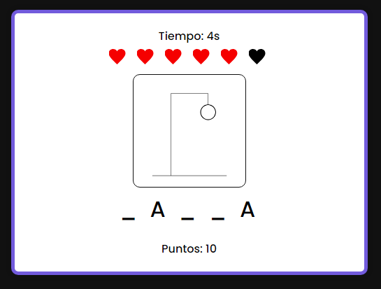

Manual de Usuario
Introducción
Este manual te guiará a través de las funcionalidades del juego Ahorcadaso, explicando cómo jugar, las reglas, y las principales características.
Requisitos del Sistema
- Navegador web compatible (Chrome, Firefox, Edge)
- Conexión a Internet
- Resolución de pantalla mínima de 1024x768
Opciones de Dificultad
El juego Ahorcadaso ofrece dos niveles de dificultad para que puedas elegir el que mejor se adapte a tus habilidades:
-
Dificultad Fácil
En este modo al adivinar una palabra se te reinician las vidas. Este modo es ideal para principiantes o para quienes desean una experiencia más relajada.
-
Dificultad Difícil
En el modo difícil contas con 6 vidas que vas a tener que mantener hasta que se termine el jeugo, al adivinar una plabara no se te reinician las vidas, lo que aumenta la presión y hace que el juego sea más desafiante. Este modo es perfecto para jugadores experimentados que buscan poner a prueba sus habilidades.
Para seleccionar tu nivel de dificultad, simplemente elige la opción correspondiente en la pantalla de inicio antes de comenzar a jugar.
Cómo Jugar
- Haz clic en "Jugar" en la página de inicio.
- Elige una letra para intentar adivinar la palabra oculta.
- Por cada letra incorrecta, perderás una vida.
- Las vidas se reinician cada vez que adivinas una palabra
- Al acertar la palabra se habilita el boton de "Continuar" donde te muestra la próxima palabra que tiene que ser descubierta
- El objetivo es adivinar la mayor cantidad de palabras hasta quedarte sin vidas y equivocarte la palabra
- En cualquier momento puedes reiniciar la partida con el botón "Reiniciar"


Puntuación
La puntuación se calcula con base en el número de palabras y letras adivinadas y el tiempo transcurrido. Al finalizar una partida, puedes guardar tu puntuación y compararla con el top 5 jugadores.
Al errar la palabra te aparece un formulario para poner tu nombre y un botón "Guardar Puntuación" para guardar

Reglas del juego
- Tienes 6 intentos incorrectos por letras antes de que se complete el ahorcado y pierdas el juego.
- Cada letra correcta te da 20 puntos.
- Cada letra incorrecta te saca 10 puntos y perderás una vida. 
- Cada palabra acertada te da 50 puntos
- Al poner continuar después de acertar se suman los puntos de la palabra y de los segundos

Controles
| Acción | Control |
|---|---|
| Elegir letra | Hacer clic en una letra disponible en pantalla o usar el teclado |
| Guardar puntuación | Botón "Guardar Puntuación" |
| Reiniciar partida | Botón "Reiniciar" |
FAQ - Preguntas Frecuentes
¿Cómo reinicio el juego?
Para reiniciar el juego, haz clic en el botón "Reiniciar" que aparece después de finalizar una partida.
¿Cómo se calcula la puntuación?
La puntuación se calcula en base a la rapidez con la que adivinas las palabras y cuántas adivinaciones correctas haces.